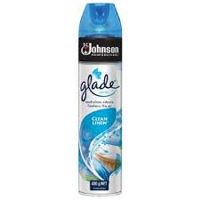
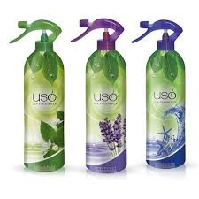

Air freshener is a substance or device for making the air in a room/car smell fresh. It is designed to mask or remove unpleasant room odors. These products typically deliver fragrance and other odor counteractants into the air. They do so through a variety of product formats, including aerosols, candles, potpourri, and gelsHigh-tech versions are heat activated or can automatically spray into the air throughout the day. Even the names of the fragrances have been revamped. Traditional scents such as "rose" or "lemon" have been replaced with more exotic sounding names such as "Tahitian spring mist" or "dewy citrus orchard.". Most air fresheners contain a variety of fragrances and essential oils. Fragrances are chemical compounds that have pleasant odors. Essential oils are naturally occurring oils typically obtained from plants. The oil contains the essence of the plant’s fragrance, hence the term "essential". Examples of essential oils include cinnamon oil, pine oil, and lavender oil.


BENEFITS OF USING AIR-FRESHENER IN HOMES
Natural Fragrances:they offer a transformative effect that lets you enjoy aromas that you would otherwise only encounter when you are out and about, but many air fresheners are made using essential oils and other natural ingredients, meaning you get to benefit from all of those with only a single spray of the can.
Eliminating Odours:masking unpleasant smells. The best are capable of eliminating the odour altogether, meaning a few sprays will lead to a more neutral smelling room that is still much more pleasant than walking into a room with a foul odour.
Airborne Pathogens:air fresheners can serve a medicinal purpose too. At various points, airborne pathogens will arise in your home that could cause an array of illnesses. Air fresheners made using natural extracts, particularly those with essential oils in the ingredients list, are often capable of eliminating these pathogens or, at the very least, reducing the effects they can have on the people living in the house.
VarietyHappily, you don’t only have to pick out of one or two fragrances when choosing an air freshener. There are so many different options out there that you will always be able to find one that suits your particular tastes.
Positive Moods:Walking into a home that emits a nice, fresh aroma is an instant mood lifter. An air freshener revitalizes your rooms, which serves to revitalize all of those who set foot in the room. If you are having a bad day, a quick spray of an air freshener will often help to improve your mood.